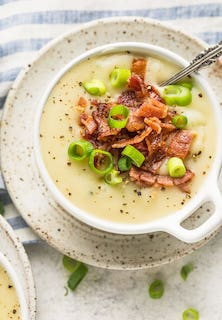

Dairy Free Potato Soup

Description
Okay, it’s still 90 degrees here but in the morning it’s 60 degrees so I believe that’s cause to celebrate. So I’m declaring it soup weather. I’m working like crazy on a lot of fun comfort food recipes for y’all so there’s plenty more to come.
When I say this 30 Minute Dairy Free Potato Soup is creamy I mean it’s really truly very creamy. It’s a blended soup and that blender makes everything perfectly smooth. You’ll also set aside one cup of diced potatoes to add back in after you’ve blended the rest. We need a few chunks of potato too, right?
Did you catch the part about this being dairy free? I typically avoid potato soup in restaurants because I know they’re full of milk and cheese. Not this one! This means my version is less calories but I’m betting you won’t be able to tell.
Since I’m not using milk the creaminess of this soup comes from a cup of unsweetened canned coconut milk. It doesn’t give the soup any coconut flavor at all!
Ingredients
- 2.5 lbs potatoes, russet, yellow, or gold potatoes work best, peeled and diced
- oz chicken stock or broth
- 1/2 white or yellow onion, sliced
- 1 cup canned coconut milk, unsweetened
- 1/4 tsp garlic powder
- 1 1/2 tsp salt
- 1/2 tsp pepper
- 1/4 tsp dried thyme or dried chives
Steps
- Add chicken stock, onion, and potatoes (peeled and diced into 1 inch cubes) to a soup pot. Bring to boiling and cook for approximately 5 – 8 minutes or until potatoes are easily pierced with a fork. Be careful to not overcook your potatoes or you'll end up decreasing the amount of chicken stock you have.
- Once cooked, remove 1 cup of the diced potatoes from chicken stock. Set aside in a separate dish.
- Blend the diced potatoes (excluding the 1 cup you set aside), onion, chicken stock, and 1 cup canned coconut milk until smooth.
- Pour the blended soup back into your pot. Add the 1 cup diced potatoes you set aside earlier, salt, pepper, garlic powder, and dried thyme (or dried chives). Stir.
- Ladle the finished soup into bowls and top with fresh chopped chives and crispy bacon.